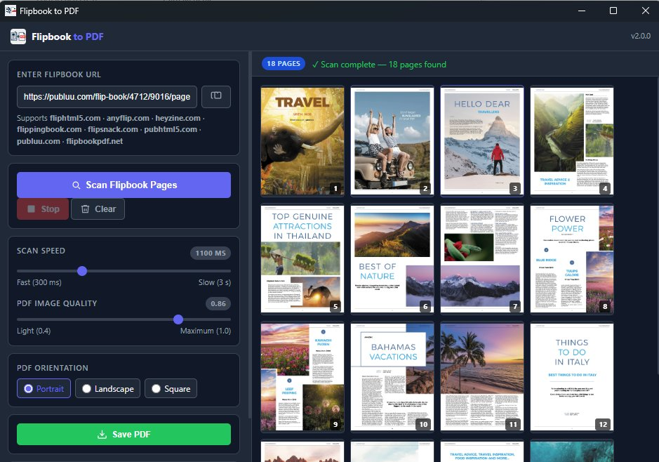
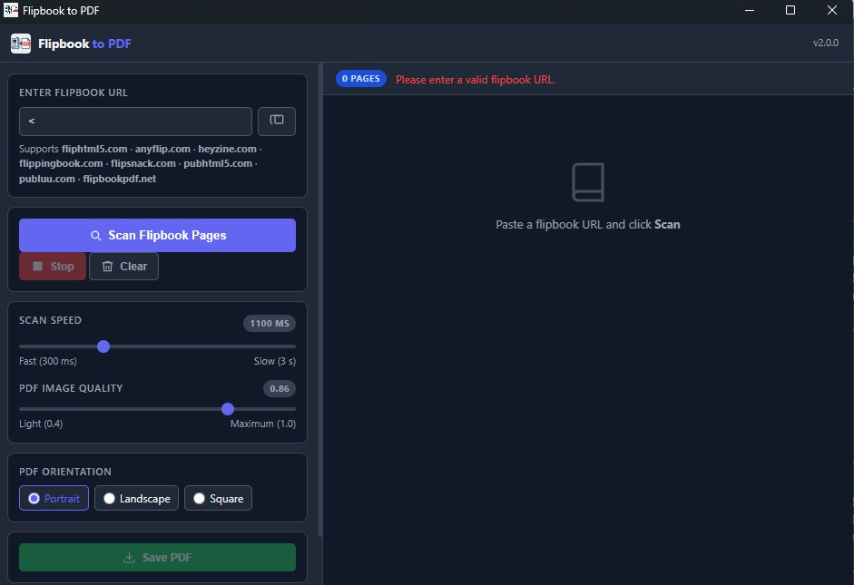
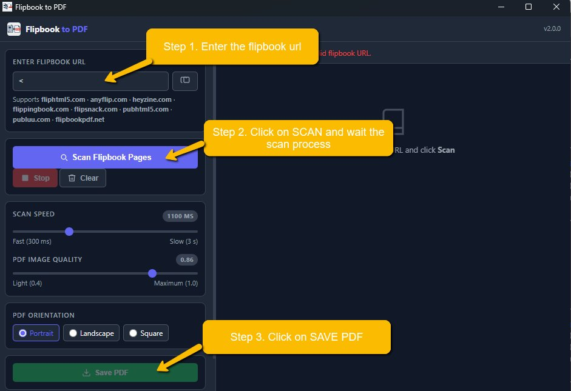

Paste a URL, click Scan, save as PDF. Works with FlipHTML5, AnyFlip, Heyzine, FlippingBook, Flipsnack, PubHTML5 and more — no browser extension needed.
Free · No account required · v2.0.0


Supported flipbook platforms
Copy the URL of any online flipbook from your browser and paste it into the app. Supports all major flipbook platforms — no configuration needed.
The app opens an invisible browser window, navigates through every page automatically, and collects all images in real time. Live thumbnails appear as each page is captured.
Choose your PDF orientation and image quality, then click Save PDF. Pick your destination folder and your flipbook is saved as a standard, portable PDF file.

The app navigates the flipbook automatically, page by page, and captures every image at full resolution. No manual interaction required.
For Heyzine flipbooks, the app detects and downloads the original PDF directly — maximum quality, zero scanning needed.
Each scanned page appears in real time as a thumbnail. See your progress and verify the output before saving.
Slide from 300ms (fast) to 3s (slow) to match the flipbook's loading time. Slower speeds improve accuracy on heavy publications.
Choose between light (0.4) and maximum (1.0) JPEG quality. Find the right balance between file size and visual fidelity.
Pick the PDF page orientation that matches your flipbook format before saving. Works with A4 and square publications.
Unlock watermark-free output, unlimited pages, and priority support with a one-time PRO activation code.
Built with Electron — a genuine desktop application, no browser extension, no cloud service. Your files never leave your computer.
Full page scan via div.side-image selector. Auto-redirect from fliphtml5.com to the online. viewer.
Same engine as FlipHTML5. Auto-redirect from anyflip.com to online.anyflip.com.
Detects the original PDF directly from the page source and downloads it at full quality. No page-by-page scanning required.
✓ Direct PDF downloadScreenshot-based capture of each spread. Smart duplicate detection stops the scan automatically at the last page.
✓ Full supportAuto-detects the embedded CDN viewer iframe and redirects the scan directly to the player URL for accurate capture.
✓ Full supportAuto-redirect from pubhtml5.com to online.pubhtml5.com for the interactive viewer.
Generic multi-selector strategy with background-image CSS extraction and automatic Next button navigation.
~ Generic modeAny flipbook not listed above is handled by the universal scanner: extended CSS selectors, background-image support, Next button navigation.
~ Universal modeFree. No account. No subscription. Install and go.
Version 2.0.0 · Free · Requires Windows 10+ or macOS 11+